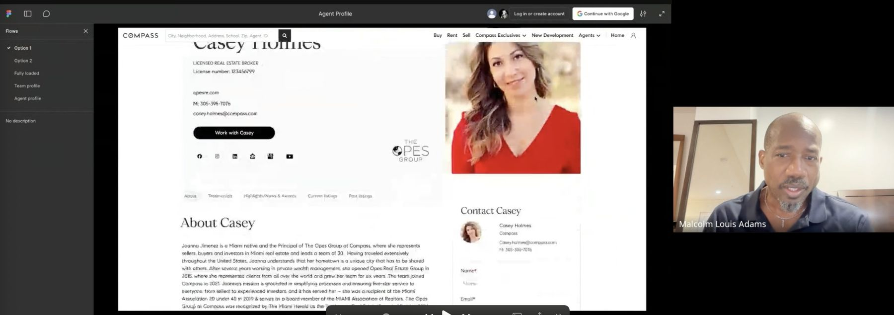
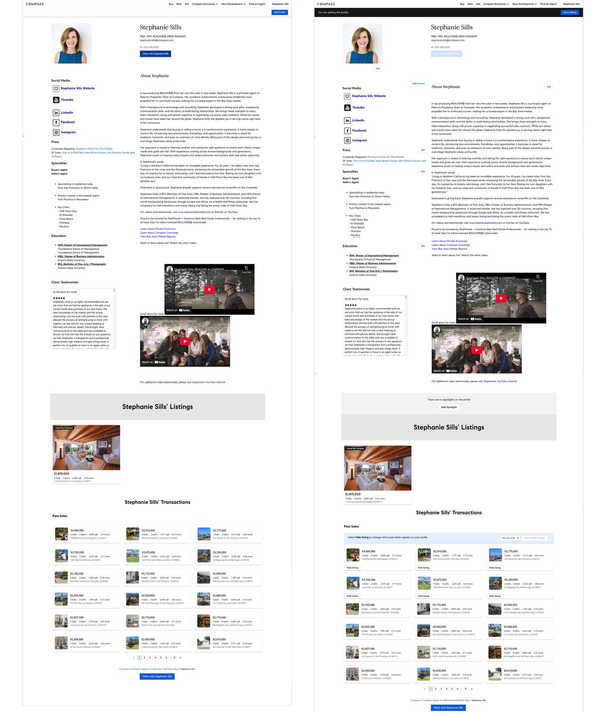

Platform / M&A · Compass AI in process · research synthesis
Rebuilding the agent profile: from legacy system to acquisition-ready platform
A ground-up rebuild of Compass's agent profile editor and public profile, turning unstructured free-form bio text into validated, searchable data, on a six-week clock set by a strategic acquisition.
The rebuilt public profile: structured contact info, licenses, and designations, ready to search and filter.
The problem
Compass agents managed their profiles through an outdated editor where critical information was buried in unstructured free-form bio text: social links, professional designations, languages spoken. The data was impossible to validate, search, or export reliably, and that was directly blocking a strategic acquisition partner from retiring their legacy system ahead of a critical deadline.
The friction showed up everywhere. Profile edits happened inline, causing confusion and frequent complaints. Agents often relied on Agent Experience Managers just to get a basic profile set up, and routine updates depended on workarounds. All of it surfaced as a steady stream of complaints in Canny, our customer feedback tool.
Discovery: two rounds, two audiences
I ran two rounds of usability research. The first tested the editor and redesigned profile with 10 agents and 2 staff members, using AI-assisted synthesis to identify patterns quickly. The second validated the consumer-facing public profile through unmoderated Lyssna testing with 20 participants across mobile and web.

A moderated session from the first round of testing, walking an agent through the redesigned profile prototype in real time.
“Big, bold, clean, easy to translate. A huge improvement from what we have today.”
— Agent, editor usability testing
Consumer testing surfaced one significant failure: languages spoken was nearly impossible to find, with 15 of 20 participants giving up before locating it. The fix was direct: move languages onto the contact card, and reorder the mobile layout to surface the About section before listings, responding to feedback that users wanted to understand the agent as a person first.
Testing also revealed an opportunity: users wanted hard numbers, homes sold, days on market, sale-to-ask ratio, which directly informed the Highlights module.
Solution: structure on both sides of the profile
The rebuild covered both the agent-facing editor and the consumer-facing public profile. On the editor side, a fragmented experience became a modular, tabbed Settings interface spanning 10 distinct areas, with every legacy freeform field restructured into validated, searchable data. Getting there in six weeks meant aligning four PMs, four engineers, and legal around one data model while the acquisition clock ran.
The modular editor: Overview, Bio, Headshot & Logo, Highlights & Press, Spotlights & Videos, Testimonials, and My listings, each a focused section instead of one long scroll of freeform text.

Before: the legacy profile, live view next to editing mode, everything still funneled through one long freeform bio field or an Agent Experience Manager for even a basic update.
The rebuilt public profile: languages moved onto the contact card, and the mobile layout reordered to lead with the About section, both direct responses to usability findings. Use the arrows to switch between Casey's individual profile and The Opes Group's team page.
Outcome: a data foundation for what comes next
The redesign was delivered to engineering handoff in late 2025. The new modular system structured 68 professional designations, social URLs, languages, education, and specialties for the first time, creating the data foundation required for the acquisition integration and for future agent branding, SEO, and buyer-agent matching.
What I'd take from this
With four PMs, four engineers, and legal all in the mix, alignment was a constant challenge. Looking back, I would have established a more regular cross-functional cadence from the start. Structured check-ins across all stakeholders would have caught redundancy earlier, and kept the project moving more efficiently toward handoff.